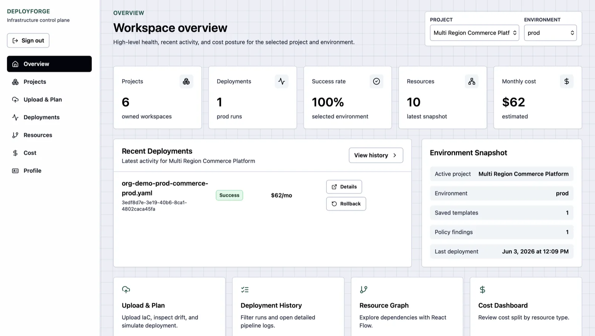

Operational dashboard
Next.js, TypeScript, React Flow dependency graphs and Recharts cost views.
A simulation-first infrastructure deployment control plane that demonstrates enterprise cloud workflows without risky live provisioning.
Live infrastructure platforms are expensive and unsafe to demonstrate. The project still needed to prove desired-state planning, policy enforcement, drift awareness, cost visibility, history and rollback judgment.
Users upload an IaC template, review parsed resources and proposed changes, run policy validation, simulate pipeline stages, and persist a new environment snapshot.
Upload → Parse → Validate → Compare state → Plan → Policy checks → Simulate → Persist → Graph · Cost · History · Rollback
Next.js, TypeScript, React Flow dependency graphs and Recharts cost views.
FastAPI, Pydantic and SQLAlchemy with JWT-protected routes and Swagger.
Alembic-managed relational data for deployments, resources and rollback events.
GitHub Actions validates migrations, tests, frontend build and type safety.
Coverage includes auth, organization isolation, validation, template parsing, planning, policy violations, deployment history, drift and rollback.
Auth, profile, projects, templates, planning, deployments, resources, cost estimation and rollback are represented in the control-plane API.
Hashed credentials, JWT-protected routes, organization isolation, constrained CORS and startup rejection of unsafe production defaults.
Desired state is compared with the latest stored deployment; rollback restores a previous resource snapshot without live cloud mutations.
Deterministic, free demonstrations improve safety and repeatability, but provider-specific apply behavior remains outside the current boundary.
GitHub Actions runs an Alembic migration smoke test, pytest, the production frontend build, and TypeScript checking.
IaC review requires live accounts or disconnected parsing, policy, cost and state tools.
One safe pipeline produces a plan, policy result, snapshot, graph, cost view and rollback history.
